The .NET Framework 4 includes significant advancements for developers writing parallel and concurrent applications, including Parallel LINQ (PLINQ), the Task Parallel Library (TPL), new thread-safe collections, and a variety of new coordination and synchronization data structures.
This sample includes example applications and library functionality that demonstrate, utilize, and augment this support (it is not production quality). This sample is a single .zip containing a single Visual Studio .sln file, which then contains multiple Visual Studio projects that highlight key capabilities provided by the .NET Framework 4 and the parallel programming support it provides. Below are descriptions of the included examples.
(For discussions of Parallel Extensions and/or these samples, visit the forums at http://social.msdn.microsoft.com/Forums/en-US/parallelextensions/threads. For documentation on the parallelism constructs in .NET 4, see http://msdn.microsoft.com/en-us/library/dd460693(VS.100).aspx. For information direct from the Parallel Extensions team, subscribe to the team blog at http://blogs.msdn.com/pfxteam. For videos/articles on parallelism and Parallel Extensions, visit the Parallel Computing Developer Center at http://msdn.com/concurrency.)
| 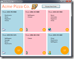 | Project Name: AcmePizza
Languages: C#, Visual Basic Description: This simple and somewhat silly application demonstrates using concurrent collections with WPF. The collections are wrapped with observable facades, such that multiple threads may modify the collections concurrently, and those updates are safely propagated to UI controls. |
| 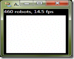 | Project Name: Antisocial Robots
Languages: C# Description: Demonstrates doing a computationally-intensive operation many times per second, as a bunch of “robots” try to get as far away from each other as possible. |
| 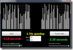 | Project Name: BabyNames
Languages: C#, Visual Basic Description: This is one of the first applications we ever built to use Parallel LINQ. Using LINQ and PLINQ, it queries a data set of baby name popularity information, sorts the results, and displays the results in a simplistic WPF user interface. |
| Project Name: BlendImages
Languages: C# Description: A demo of very simple image manipulation using a Parallel.For loop. The application allows the user to load up two images and blends them together into a single, new image. |
|
| 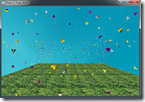 | Project Name: Boids
Languages: C# Description: An implementation of a classic flocking algorithm, utilizing WPF for pretty 3D visualization of the “boids”, whose next positions and velocities are computing in parallel. |
| 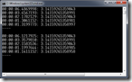 | Project Name: ComputePi
Languages: C#, Visual Basic Description: A console application that estimates the value of PI using a variety of both serial and parallel implementations, the latter done with both PLINQ and the Parallel class. |
| 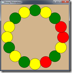 | Project Name: DiningPhilosophers
Languages: C#, Visual Basic Description: A WPF application that demonstrates the classic “Dining Philosophers” synchronization problem. The application implements several solutions, including one based on asynchronous techniques using Tasks. |
| 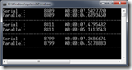 | Project Name: EditDistance
Languages: C#, Visual Basic Description: A console application that uses Tasks to parallelize a dynamic programming problem, that of computing the “edit distance” between two strings. |
| 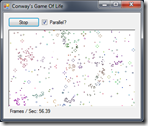 | Project Name: GameOfLife
Languages: C#, Visual Basic Description: This application provides an implementation of Conway’s Game of Life, using the Parallel class to parallelize the processing of the cellular automata. |
| Project Name: ImageColorizer
Languages: C#, Visual Basic Description: This application manipulates an image by converting the majority of the image to grayscale, except for portions of the image containing user-selected hues. |
|
| 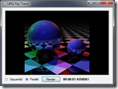 | Project Name: LINQRayTracer
Languages: C#, Visual Basic Description: Based on Luke Hoban’s LINQ implementation of a ray tracer, this application parallelizes a computationally intensive LINQ query using PLINQ. |
| 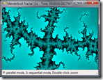 | Project Name: MandelbrotFractals
Languages: C#, C++/CLI Description: This application provides an implementation of the classic Mandelbrot fractal, parallelizing the processing of the fractal using the Parallel class. |
| Project Name: Morph
Languages: C# Description: Implements a morphing algorithm between two images. Parallelization is done using the Parallel class. |
|
| 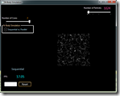 | Project Name: NBodySimulation
Languages: C#, F# Description: Implements a classic n-body simulation using C# and WPF for the UI and using F# for the core computation. Parallelism is achieved using the Parallel class. |
| 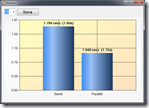 | Project Name: NQueens
Languages: C#, Visual Basic Description: This application implements a solution to the N-Queens problem, using both LINQ and PLINQ. |
| Project Name: OptionPricing
Languages: C#, Visual Basic Description: This Excel VSTO application utilizes PLINQ to price Asian Options. |
|
| 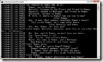 | Project Name: ParallelGrep
Languages: C#, Visual Basic Description: This console application implements “grep” functionality across a file system using PLINQ. |
| Project Name: PlinqKnobs
Languages: C# Description: A simple console application that demonstrates some of the ways execution of a PLINQ query may be controlled and configured. |
|
| 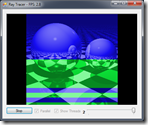 | Project Name: Raytracer
Languages: C#, Visual Basic, F# Description: This Windows application provides an animated, ray-traced bouncing ball. Sequential and parallel implementations are provided, as is a special parallel implementation that colors the animated image based on which thread was used to calculate which regions. |
| 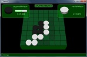 | Project Name: Raytracer
Languages: C# Description: This WPF application is a Reversi game. The AI algorithms are minimax with alpha-beta pruning, and the parallel AI (light player) uses Tasks and CancellationTokens to achieve speedup via parallelism. |
| 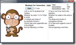 | Project Name: ShakespeareanMonkeys
Languages: C#, Visual Basic Description: This application implements and parallelizes a genetic algorithm for breeding monkeys able to speak text from Hamlet. |
| 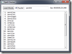 | Project Name: SpellChecker
Languages: C#, Visual Basic Description: This application implements and parallelizes a spellchecking algorithm based on the same edit distance calculation in the Edit Distance sample. |
| Project Name: Strassens
Languages: C# Description: This application implements several algorithms for performing and parallelizing matrix multiplication, including the Strassen algorithm. |
|
| Project Name: Sudoku
Languages: C#, Visual Basic Description: This is a fun application that provides a full Sudoku experience, including on-demand puzzle generation and solving. Unlike many Sudoku demos which parallelize the solver, this implementation parallelizes the generator, using PLINQ. It also demonstrates a use for speculative execution. |
|
 |
Project Name: VisualizePartitioning
Languages: C#, Visual Basic Description: This application demonstrates various approaches to partitioning as employed by both Parallel and PLINQ. |
| 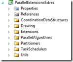 | Project Name: ParallelExtensionsExtras Languages: C# Description: This class library provides a plethora of interesting and useful extensions to take advantage of and complement the functionality available in the .NET Framework 4 for parallel programming. |
{kind=link}
{kind=link}
{kind=link}
{kind=link}
{kind=link}
{kind=link}
{kind=link}
{kind=link}
{kind=link}
{kind=link}
{kind=link}
{kind=link}
{kind=link}
{kind=link}
{kind=link}
{kind=link}
{kind=link}
{kind=link}
{kind=link}
{kind=link}
{kind=link}
{kind=link}
{kind=link}
{kind=link}